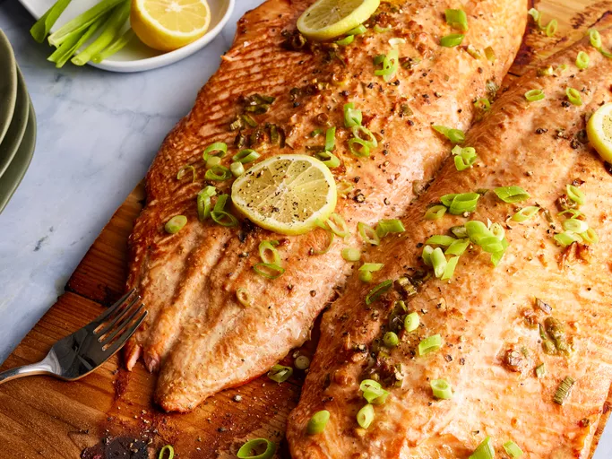

Cedar Planked Salmon

Ingredients
Original recipe (1x) yields 6 servings
- 3 (12 inch) untreated cedar planks
- 1/3 cup soy sauce
- 1/3 cup of vegetable oil
- 1 1/2 tablespoons rice vinegar
- 1 teaspoon sesame oil
- 1/4 cup chopped green onions
- 1 tablespoon grated fresh ginger
- 1 teaspoon minced garlic
- 2 (2 pound) salmon fillets, skin removed
Directions
- Gather all ingredients
- Soak cedar planks, for at least 1 hour in warm water. Soak longer if you have time.
- Stir soy sauce, vegetable oil, rice vinegar, sesame oil, green onions, ginger, and garlic together in a shallow dish.
- Place salmon fillets in soy mixture and turn to coat. Cover and marinate for at least 15 minutes, or up to 1 hour refrigerated
- Preheat and outdoor grill for medium heat. Place planks on the grill grate. Heat planks until they start to smoke and crackle just a little.
- Remove salmon from marinade and place on planks; discard marinade.
- Close grill cover. Grill salmon until it flakes easily with a fork, about 20 minutes; salmon will continue to kook after you remove it from the grill.